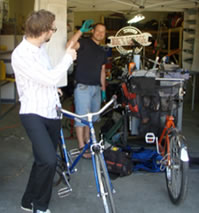

Reviews
Reviews
Home | About Joe's Garage | Rentals | Prices | Photos | Reviews
From Joe's "corporate house call" at Matrix Solutions Inc. We have used Joe for 4 years now and have always been pleased with his work. He is very knowledgeable and accommodating and has all the tools right at hand. His friendly attitude is a pleasure to deal with and we will definitely continue using him for years to come. Thanks Joe, from everyone at Matrix Solutions Inc.  "My bike has never worked so well!" - MMG Media coverage CTV August 13, 2015 "Bow River pathway cyclists embrace mobile repair shop" Beatroute magazine May 14, 2015 "Mobile service from Joe’s Garage can fix your bike on the spot" Beatroute magazine July 2009 Joe's Garage - fixing your bike on the run Swerve magazine September 18, 2009 |
403-874-JOES (5637)
joe@joesgarage.mobi
© Copyright 2010-2022, Joe's Garage, Calgary, Alberta, Canada